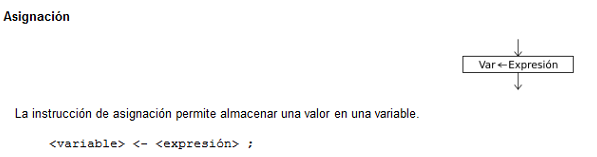
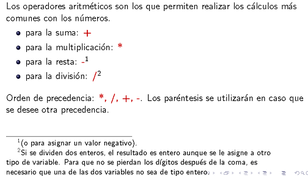
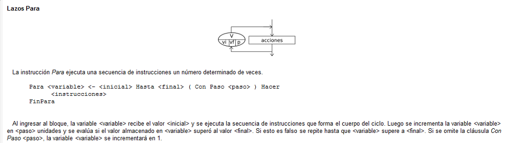
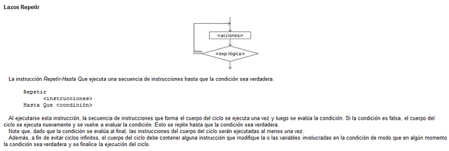
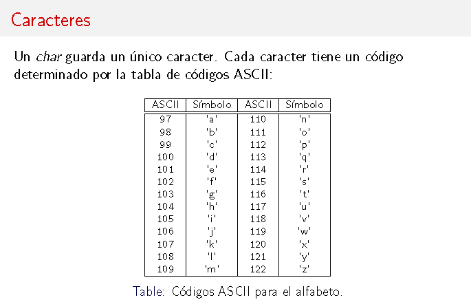
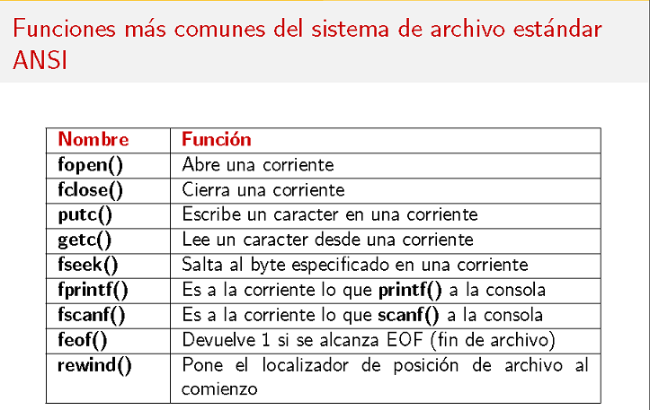

Notas de Programación Estructurada UAM C
El objetivo de este Sitio Web Didáctico es la muestra de Objetos de Aprendizaje (OA) ejemplificando casos de resolución de problemas usando las técnicas básicas de la programación estructurada.
Además este sitio Web servirá para ilustrar el procedimiento de las estrategias de solución, codificación y explicación de su ejecución.
Te sugerimos ir a Temario para consultar el contenido de este sitio.
Este sitio web servirá para ilustrar las estrategias de resolución de problemas a través de programas estructurados, así como el procedimiento seguido para la concepción de la solución, la codificación y la explicación de su ejecución.
Cada Objeto de Aprendizaje,
OA se pondrá a disponibilidad del usuario los archivos de cada una de sus partes.
Fundamentos Básicos
PseudoCódigo: Comprende el diseño del algoritmo mediante lenguaje de programación informal(por asi decirlo).
Diagramas de Flujo: Representación gráfica de el pseudocódigo implementado.
Código en C: Lenguaje de programación de alto nivel
.
Contenido General:
Los OA estan comprendidos por las siguientes partes:
PSeudoCódigo
Forma General de un Algoritmo en PSeudoCódigo
Todo algoritmo en pseudocógido tiene la siguiente estructura general:
Proceso SinTitulo
accion 1;
accion 1;
.
.
.
accion n;
FinProceso
Comienza con la palabra clave Proceso seguida del nombre del programa, luego le sigue una secuencia de instrucciones y finaliza con la palabra FinProceso. Una secuencia de instrucciones es una lista de una o más instrucciones, cada una terminada en punto y coma.
Tipos de Datos
Las acciones incluyen operaciones de entrada y salida, asignaciones de variables, condicionales si-entonces o de selección múltiple y/o
lazos mientras, repetir o para.
Tipos de Datos Simples
Existen tres tipos de datos básicos:
Numérico: numeros, tanto enteros como decimales. Para separar decimales se utiliza el punto. Ejemplos: 12 23 0 -2.3 3.14
Lógico: solo puede tomar dos valores: VERDADERO o FALSO.
Caracter: caracteres o cadenas de caracteres encerrados entre comillas (pueden ser dobles o simples). Ejemplos 'hola' "hola mundo" '123' 'FALSO' 'etc'
Los tipos de datos simples se determinan automáticamente cuando se crean las variables. Las dos acciones que pueden crear una variable son la lectura(LEER) y la asignacion(<-).
Asignación de valores

Asignación en Lenguaje C.
Asignación en Pseudocódigo
Por ejemplo, la asignación "A<-0;" está indicando implícitamente que la variable A será una variable numérica.
Una vez determinado el tipo de dato, deberá permanecer constante durante toda la ejecución del proceso; en caso contrario el proceso será interrumpido.
Tipos de Datos en C
Palabras reservadas para los tipos de variables en C:
int: para almacenar números enteros (con signo). Ej: 2, -10, 4889.
float: para almacenar números en punto flotante (no enteros) con signo.
double: para almacenar números en punto flotante (no enteros) con signo.
El tipo double es un float con doble precision
(tiene el doble de capacidad para digitos y tambien ocupa el doble de memoria).
char: para almacenar una sola letra o simbolo.
La lista estandar de caracteres es la tabla ASCII. Ejemplo: 'a', '+', '$'.
string: para almacenar una sucesióon de caracteres (letras y/o simbolos).
Ejemplo: \wow!", \Indiana # 20".
Expresiones aritméticas y lógicas.
Operadores de C

Diagramas de Flujo
Operaciones de entrada salida.

Estructuras de control (Iterativa).


Estructuras de control (Selectiva).
Estructuras de control (Secuencial).
Estructuras de datos
Arreglos en pseudocódigo
Arreglos en Lenguaje C
Estructuras

Registros en memoria

Paso de parametros por valor o por referencia
Por referencia
Cadenas

Fundamentos de Diseño modular

Funciones y Procedimientos
Funciones para Pseudocodigo
Uso de funciones en C
Paso de parámetros por valor
Archivos definición y tipos
Operaciones sobre Archivos

Ejemplos
Atras|
Siguente|